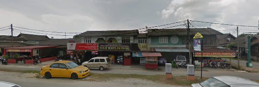
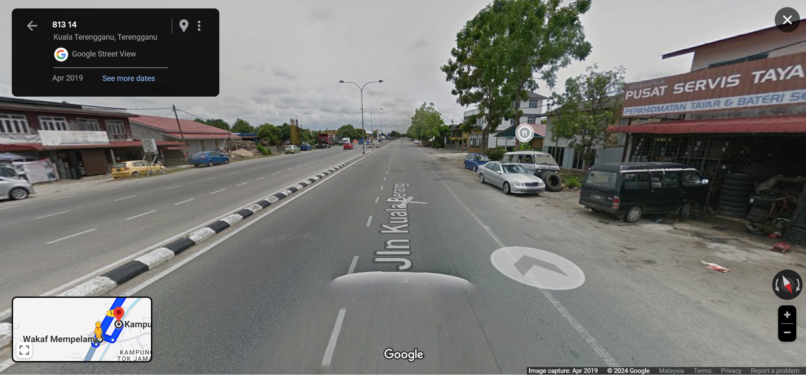

Kampung Wakaf Mempelam is a village located in Kuala Terengganu, in the state of Terengganu Darul Iman, which is a state in eastern Malaysia, and which borders Kelantan in the north, Pahang in the west and south and the South China Sea in the east.
The original name of Kampung Wakaf Mempelam is Kampung Tok Jamal, and it has been inhabited since a century and a half ago. Originally it was a swampy and agricultural area. It became the main route for traders who commuted from the city to the upstream using the road.
Interesting Facts:
- Fact 1: It was originally a swamp and agricultural area. It became the main route for traders who commuted from the city to the upstream using the road.
- Fact 2: The origin of the village name Wakaf Mempelam is the presence of a large shady tree and under this tree became a temporary shade place for the traders who came and went earlier.
- Fact 3: According to its history, the Waqf still exists and has been changed accordingly to be named Waqf Pakatan Kampung while the mempam tree is no longer there due to the current of development
- Fact 4: Kampung Wakaf Mempelam which is located on the side of the main road about 8 kilometers from Kuala Terengganu city center which leads to Kuala Berangs